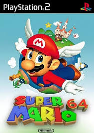

Super Mario 64
Super Mario 64 é um jogo de plataforma desenvolvido pela Nintendo e lançado para o Nintendo 64 em 1996. É um dos primeiros jogos 3D da série Super Mario e é amplamente considerado um marco na história dos videogames.
No jogo, os jogadores controlam Mario enquanto ele explora o Castelo da Princesa Peach e coleta estrelas para desbloquear novas áreas. O jogo apresenta um mundo aberto, onde os jogadores podem completar missões, resolver quebra-cabeças e enfrentar inimigos icônicos da série.